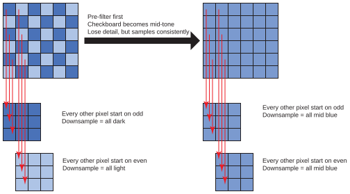
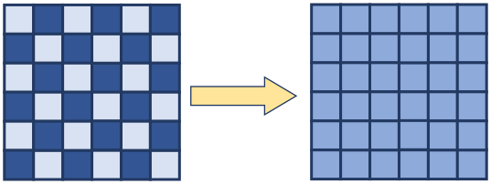
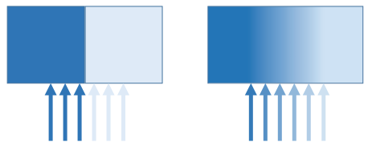
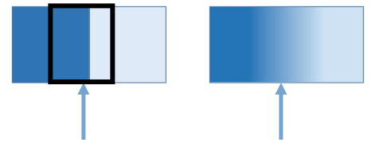
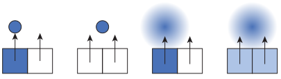
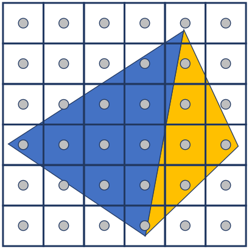

Page 5: Anti Aliasing
Aliasing comes from the fundamental limitation of the discrete representation of the images we use in computer graphics. In order to avoid the problems, we have to have realistic expectations: we cannot reliably and consistently cram more information into a small number of samples (pixels).
Anti-Aliasing is the set of techniques that we use to combat the problems of aliasing. The overall idea is that we set our expectations correctly: we simply disallow (filter out) the “extra information” that we won’t be able to capture reliably and consistently in our sampled representation. We need to remove this potentially problematic content before we sample: once we create the pixel representation, it’s too late.
Pre-Filtering Example
Let’s return to the checkerboard example to see the importance of pre-filtering.
Recall that if we want to reduce a checkerboard by a factor of two, we cannot simply pick every other pixel: if we do, we’ll either get all dark or light pixels. Once we’ve done this sampling, we’ve already lost the information that there are two colors!
{kind=link}

Downsampling a checkerboard by a factor of two. If we pick every other pixel, we get all dark or all light pixels. We need to filter first to capture the mix.
Instead, we need to filter (get rid of the fast changes) before we sample. This means averaging things together first.

{kind=link}
We lost the fact that there were dark and light areas, but we captured that there was a mix.
Blurring Intuitions
Here’s yet another way to look at the problem: when we have a sharp edge, a small change in where we sample makes a big difference. If the change is gradual, a small change in where we sample can only make a small difference.
{kind=link}

Sampling a sharp edge is sensitive to where the samples are. Sampling a smooth edge, we can miss some samples without problems.
For any place you sample, you could imagine wanting to average over the region around it (not just the specific place). What blurring does is effectively pre-compute that averaging for each position.
{kind=link}

Blurring effectively pre-computes the average around each point.
We can also see what happens with a small point. A small dark point can easily be lost between the pixels. The problem is that there is a sharp edge between dark and light. If we blur these edges (make them gradual), then the point can’t be lost between the pixels. As it moves between pixels, it gets gradually picked up by the next pixel.
{kind=link}

Anti-Aliasing in Practice
While the intuitions for anti-aliasing are common across an entire range of situations, the methods for implementing it can vary greatly.
We have already seen anti-aliasing in the form of texture filtering: we compute the average over regions of the texture to determine the color of a sample. This is a form of pre-filtering.
The fact that we have good ways to perform anti-aliasing on textures is important: it will turn out that anti-aliasing triangles (or other primitives) is a much harder problem. This is part of the reason we prefer to use textures to create details.
{kind=link}

To anti-alias triangles, we need to consider that a triangle may only partially fill the footprint of a pixel. A pixel may need to consider multiple triangles, not just the triangle it covers.
We will not explore anti-aliasing in more detail now. Instead, we will return to the concept as it comes up in specific situations.
Check Your Understanding
Fill in the type-in boxes to check that you understand these important concepts. Write answers (a sentence or two should be fine) in your own words.
Question 1: Why do we need to pre-filter, and not post filter?
Question 2: Why do anti-aliasing concerns give us (yet another) reason to prefer texture mapping over lots of small triangles in order to create a complex colored pattern?
Question 3: Does aliasing go away if we have a higher resolution screen?
| Kind
Kind of rubric items: standard - expected from all students advanced - used to get a better grade creative - an opportunity to do something creative optional - not required, but encouraged |
Description | |
| standard | Aliasing Questions |
Summary
Anti-aliasing requires us to use techniques that remove problems before they happen. This means getting rid of high-frequency content that cannot be captured by sampling.
Next: Page 6 - Rasterization: How we draw